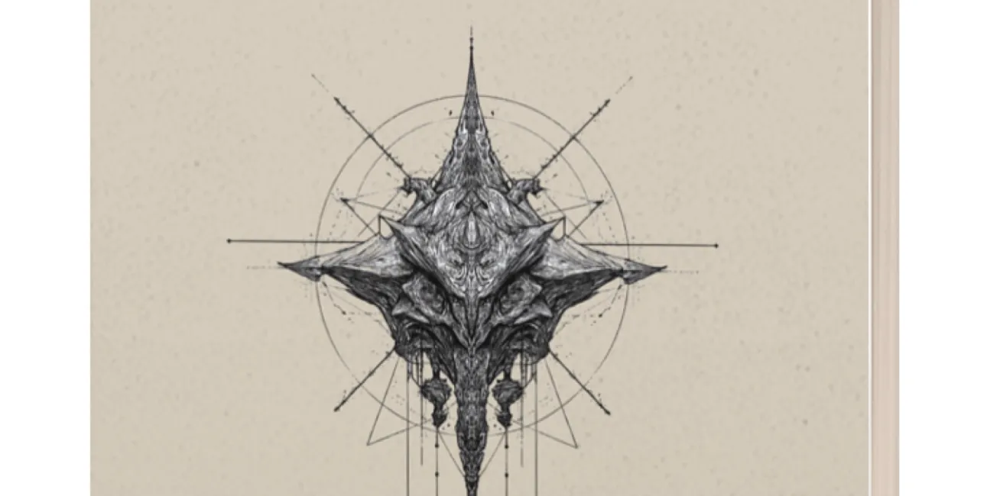
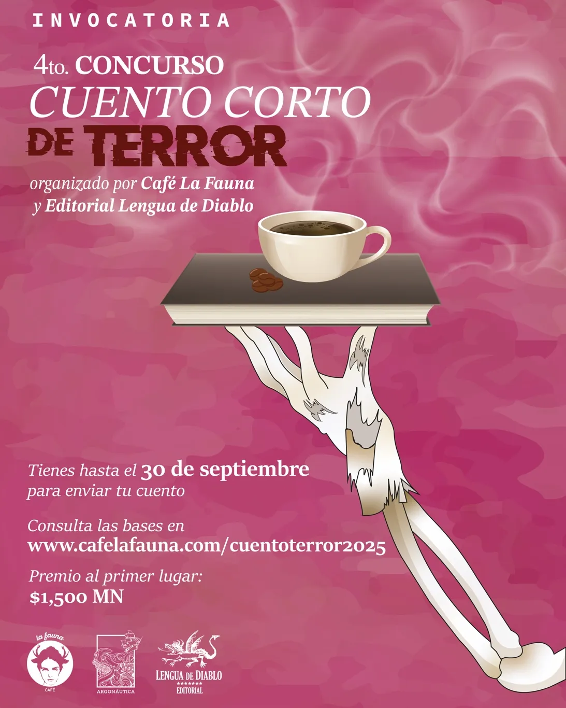

El Gran Dios Bestia y Otros Cuentos de Terror (La Elección del Lector)
Sandra Arias es la lectora que en esta cuarta edición del concurso de cuento corto de terror participa en “La elección del lector”, que consiste en elegir un cuento que, adicional al ganador “El gran dios bestia”, le resulte interesante. Su elección fue el cuento “Sueño colectivo” de Emmanuel Lagunas. En palabras de Sandra:

El cuento “Sueño colectivo” destaca por comprender que el terror no siempre está en lo explícito, sino en no saber lo que nos acecha, lo que se esconde entre las sombras. Mientras gran parte de las propuestas se apoyaron en el gore y figuras monstruosas tradicionales, este relato elige la incertidumbre.
A través de la inminente llegada de unos ángeles, una figura históricamente asociada a la protección y lo divino, lo benévolo se convierte en amenaza. El miedo se expande en la expectativa; lo vemos en las reacciones humanas, en el caos, en la urgencia y en esa voz que llama al protagonista.
El terror está en lo no dicho, en lo que cada persona imagina antes de mirar de frente aquello que viene por todos. Por su sutileza y por la atmósfera que logra con pocos elementos, escogí “Sueño colectivo” como mi favorito.
Te invitamos a leerlo
Sueño Colectivo
José Emmanuel Lagunas
—¡Los ángeles ya vienen!
Daniel abre los ojos de golpe. Está empapado en sudor, el pecho le sube y baja como si hubiera corrido sin parar. Tarda unos segundos en entender dónde está. Reconoce el techo agrietado, el ventilador inmóvil, la silueta de la lámpara en la esquina. Es su habitación. Despacio, se sienta en el borde de la cama. Tiene la boca seca y los ojos húmedos. Esboza una sonrisa. Ha soñado con su difunta hija Valeria. Su rostro era el mismo que en vida, pero en sus ojos no había alegría, solo miedo. Y esa frase Los ángeles ya vienen. Lo inquieta. Enciende la televisión buscando algo con que distraerse, pero todos los canales muestran la misma transmisión de emergencia.
“Este es un mensaje del gobierno de la nación. Alerta. Alerta. Alerta. Por todo el mundo se habla de un sueño colectivo donde fallecidos dan un ominoso mensaje: Los ángeles ya vienen. Se exhorta a toda la población a mantener la calma. No tomen decisiones apresuradas. Repito. Mantengan la calma y no tomen decisiones apresuradas”.
Daniel se queda paralizado al escuchar al locutor. Escucha un golpe seco que sacude la pared de la sala. Luego otro. Y después uno más. Se pone de pie, con las piernas como gelatina, y se acerca a la ventana. Enjambres de insectos y parvadas de aves se estrellan contra los edificios. Le llegan los chillidos desesperados de roedores mutilándose a mordidas en la cocina. Retrocede perturbado, pero se detiene al sentir un crujido bajo sus pies. Agacha la mirada y observa cómo las cucarachas parecen buscar ser aplastadas por él.
***
Daniel no ha salido de su casa desde la primera vez que soñó con Valeria. Durante el último par de días ha necesitado de pastillas para dormir más de una hora. Cada vez que cierra los ojos, su mente lo arrastra de vuelta al mismo lugar: un campo vacío, iluminado por un sol gris, donde su hija lo observa desde la distancia, con el rostro descolocado.
— ¡Los ángeles ya vienen! ¡Por favor, papá! ¡Quítate la vida! ¡El infierno es mejor que lo que ellos te harán! —le suplica conteniendo el llanto.
Daniel se despierta con un grito ahogado, las sábanas empapadas y los nudillos marcados de tanto apretar las manos. Se levanta tambaleante, con el estómago revuelto y la mente al borde del colapso. Con cada sueño, su hija luce más desesperada.
Desde su ventana escucha manifestantes pregonando: “¡Son demonios! ¡Los engañan con su apariencia!”, “¡No se suiciden!” “¡No escuchen las voces de los farsantes!” Daniel la cierra y enciende el televisor. Los noticieros muestran imágenes de los océanos tapizados con los cadáveres de delfines, ballenas, peces, algas y moluscos. En las granjas, zoológicos y laboratorios, los animales han preferido estrellar sus cráneos a esperar la llegada de los supuestos ángeles. No soporta ver cómo la fauna ha elegido morir. Revisa su celular para intentar distraerse, mas solo ve invitaciones a eventos de suicido masivos acompañados por la leyenda: “No te vayas solo”. Cansado decide tomar una pastilla.
—¡Los ángeles ya vienen! ¡Por favor! ¡Suicídate antes de que sea tarde!
El sonido de un disparo despierta a Daniel. En la televisión ve el cuerpo tendido del conductor. La señal se interrumpe: “Este es un mensaje del gobierno de la nación. Alerta. Alerta. Alerta. Las granjas se han quedado sin animales e insectos. Las cosechas se han podrido en su totalidad. Si tienen comida, raciónenla. Repito. Si tienen comida, raciónenla. Los servidores públicos que quedamos hacemos lo que podemos para llevar la ayuda”.
Daniel grita y rompe en llanto.
***
La electricidad falla con frecuencia y la señal de internet desapareció por completo desde hace horas. Daniel permanece inmóvil en el sillón con la mirada clavada en la transmisión de emergencia, rodeado de botellas de agua y latas de comida que ha racionado con más precisión que esperanza. No come ni duerme. Cada vez que logra conciliar el sueño, Valeria aparece. Se esfuerza por mantenerse despierto, pero ha llegado a su límite.
—¡Papá! ¡Papá! ¡Por favor! ¡Esta es la última advertencia que puedo darte! ¡Tienes que morir! ¡Los ángeles están por llegar!
Daniel despierta gritando. Su corazón late con tanta fuerza que le duele el pecho. Le zumban los oídos. Necesita un minuto para estabilizarse. Cuando lo logra, se da cuenta de que el mensaje en la televisión ha cambiado. La pantalla destella en rojo.
“Este… este es mi último mensaje. No sé si alguien me esté escuchando, pero he sido informado que el campo magnético de la Tierra está cambiando violentamente. Los contadores Geiger están vueltos locos. Los ángeles están por llegar. Solo quedo yo en mi oficina. Si alguien decide seguir con vida, recolecte todos los alimentos que pueda. Las plantas se están marchitando y las semillas ya no están germinando. No queda nada más que esperar el amargo final. Supongo que nos veremos en el infierno”.
Un disparo retumba desde el televisor. En la pantalla vacía, comienza a sonar el himno nacional. Desde la ventana, una luz de un color que no debería existir ilumina la sala. Conteniendo el aliento, Daniel se acerca a ella. Y al ver a los ángeles, comprende por qué todos los animales e insectos eligieron morir.
La Lectora:
Sandra Arias
Estudió artes, ama leer, escribir e investigar sobre ciencia, arte y tecnología, siempre con música de fondo. Comparte lecturas, ideas y recomendaciones de ficción especulativa y es parte de Trébol Estelar, un proyecto literario y gráfico donde crea stickers, separadores y playeras.
Realizamos el concurso en conjunto con Lengua de Diablo, editorial independiente que publica textos fantásticos, de ciencia ficción y, por supuesto, de terror.

Descarga la publicación con cuentos seleccionados y ganador del concurso en:
lenguadediablo.com/elgrandiosbestia
Visita Café La Fauna y encuentra comida, café y libros.